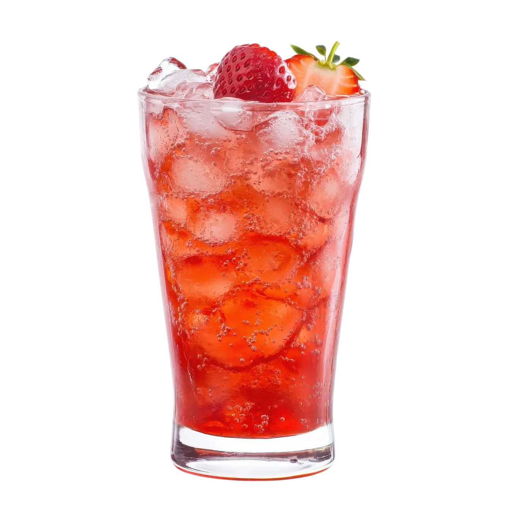

Limonada con Fresa
Tiempo: 10 minutos · Dificultad: Muy Fácil · Porciones: 4 vasos

Preparación
- Corta las fresas en trozos y colócalas en el vaso de la licuadora junto con el jugo de limón y el endulzante seleccionado.
- Añade 1 taza de agua y licúa a velocidad alta durante 1 minuto hasta obtener un puré suave de fresa.
- Vierte la mezcla obtenida en una jarra grande a través de un colador si prefieres una textura sin semillas, o directo si te gusta con pulpa.
- Agrega las 3 tazas de agua restantes y remueve bien con una cuchara de mango largo hasta disolver completamente el endulzante.
- Llena los vasos con abundante hielo y sirve la limonada fría.
- Decora con rodajas de limón, láminas de fresa y hojitas de menta fresca en la parte superior.
¡Una limonada frutal, vibrante y súper refrescante para días calurosos!
Tips de nuestra comunidad
Descubre recetas, combinaciones y secretos compartidos por otros amantes de la cocina. ¿Tienes un secreto de cocina?
Compártelo con la comunidad.
Usa agua mineral con gas en lugar de agua natural al momento de servir; le da un toque efervescente increíble similar al de un mocktail artesanal.
Prepara un almíbar rápido de azúcar y agua antes de licuar para que el azúcar se integre perfecto sin dejar grumos al fondo de la jarra.